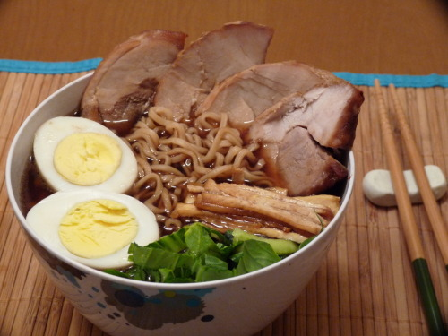

ramen
-

-

description
when I was big into naruto, those hot steaming bowls of ramen seemed like
the absolute perfect meal. however, back then, i didn’t understand the
difference between those, and what came out of top ramen packets.
ingredients
- top ramen
- 5 cups beef broth
- pork tenderloin
- 2 eggs
- 1 baby bok choy
- 1 green onion
- soy sauce
steps to make
-
marinate the tenderloin for at least 3 hours. you can use just soy
sauce, or a mixure of whatever other asian sauces you want. teriyaki
would be good, as would some mirin.
-
preheat your oven to 450, then cook the tenderloin for 12-15 minutes, or
until cooked all the way through.
-
put your eggs in a pot with enough water to cover them. bring to a boil
and cover with a lid. It should take about 10 minutes to hard boil the
eggs. then pull them out and put them into a bowl of cold water to cool.
-
while this is happening, pour or mix the stock/broth in a pot and bring
it to a simmer. you can add soy sauce or mirin to taste.
-
once simmering, add the Top Ramen noodles. do NOT add in the flavor
packets. let that cook.
-
now, we cut up all the toppings! peel the eggs and slice them in half,
cut the pork, kamaboko, bok choy, aburage, and green onion into thin
slices.
-
serve up the noodles and broth in a nice deep bowl, then place all the
ingredients in groups on top, and add in a few small rectangles of nori.
itadakimasu!